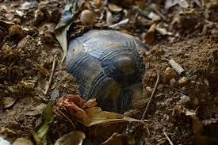

Along with keeping a well balanced diet and a nurishing environment, having knowledge on certain topics will help ensure your 3 toed box turtle has a fulfilling life!
Metabolic Bone Disease- MBD weakens the strength of your turtles bones which can result in pyramiding in the shell, or misdeveloped limbs. Proper UV light as well as calcium help prevent this.
Shell Rot- Shell Rot happens when there is a fungal or bacteria infection, or if the turtle gets in an accident and its shell has become broken or cracked. The best way to help promote healing is to apply an antibiotic cream on the wound to ensure bacteria or fungus does not grow. Contact vet immediatly!
Depending on where you are located, it might get cold during the winter months. Box turtles naturally enter a stage called brumation during the winter, which is a lighter form of hibernation. Brumation happens in many reptiles and it is the act of slowing down the metabolic system to conserve energy. Outdoor owners will generally partake in encouraging there box turtles to enter brumation by burying them underground for several months and digging them back up in the spring. Indoor owners generally will not see their turtle enter brumation.
